銚子に
良い塩梅のお寺あり、とのタレコミがあったので行ってみることにした。
そのお寺は
光厳寺。
銚子市街の西にあるお寺だ。
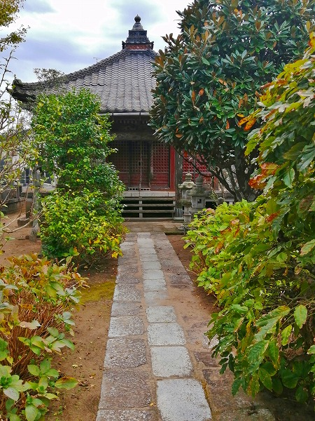
この日は銚子周辺に諸々用事があり、そのついでに寄ってみたのだが、境内はいたって普通の様子。
しかし本堂脇の薬師堂へのアプローチの途上に何やらただならぬオーラがビンビン放ちまくり。
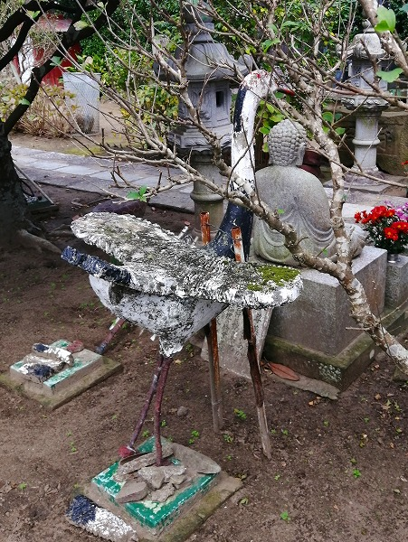
おわっぷ。
かなり香ばしい
コンクリの鶴がいらっしゃるじゃないの。
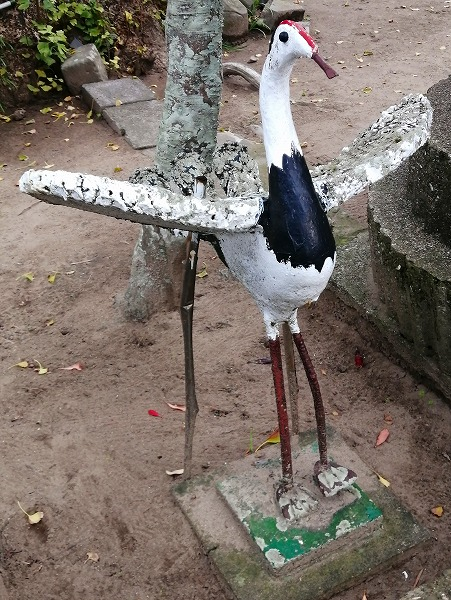
何故か故志村けんのイッチョメ！イッチョメ！ワ〜ォ！しか思い浮かばないんですけど…。
多分通常より胸を前に突き出したポーズだからなのだと思う。
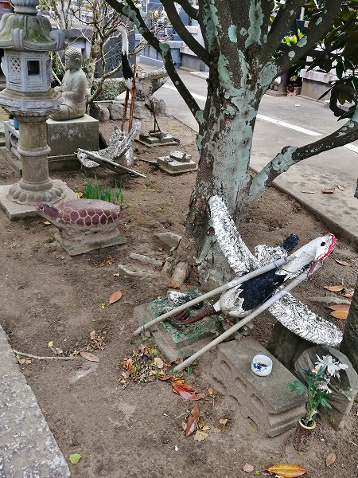
挫折しちゃった鶴も。
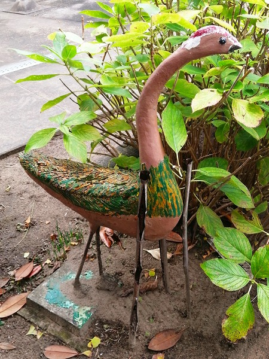
色味の違う鳥も。
もしかして孔雀、なのか？
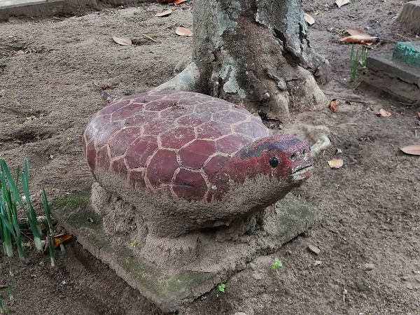
傍らには…何だろう？ツチノコなのかな？
背中の模様からすると亀なのかも知れない。
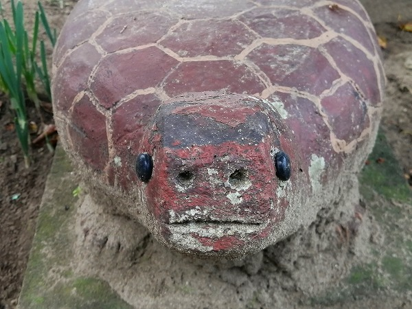
かっ…かわいい…。
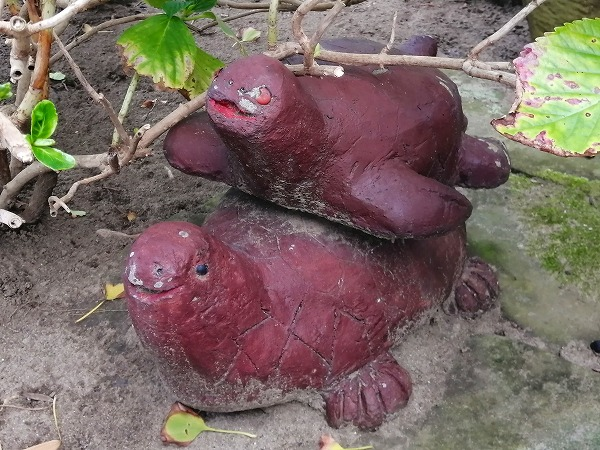
こちらはアザラシ？アシカ？オットセイ？交尾？
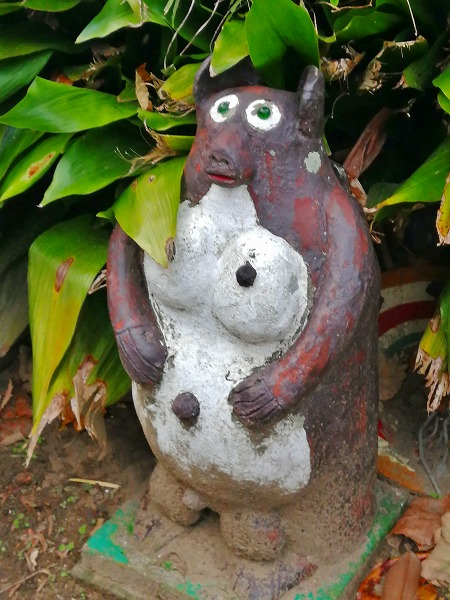
さらに狸も。
独特の造形感覚にあふれたコンクリ動物たち。
何とも言えない脱力感に満ちている。
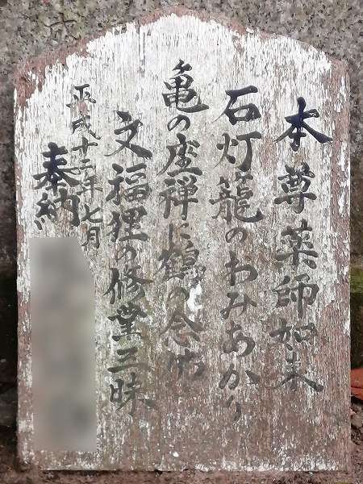
傍らに作者のコメントが。
亀の座禅に鶴の念仏文福狸の修行三昧、とある。
ああ、さっきのツチノコみたいな生き物はやっぱり亀だったんだ。
それにしても妙に鶴が多かったなあ。
よほど自信作だったのだろう。
とはいえやはり
この亀のかわいさに尽きますなー。
このつぶらな瞳を見るためだけに来る価値ありです。亀には見えないけど。
そろそろ日も暮れて参りました。
…と、なれば…
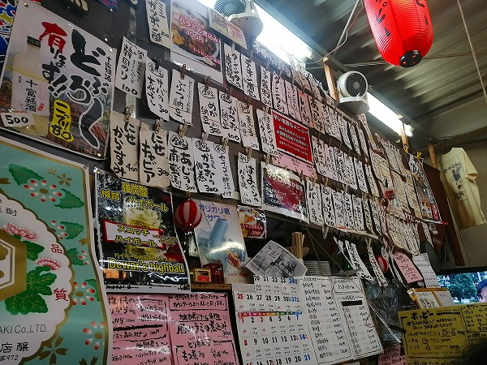
駅前の
異様に情報量の多い居酒屋で一杯。
酒も肴も最高でした！
情報提供はRさんです。ありがとうございました！